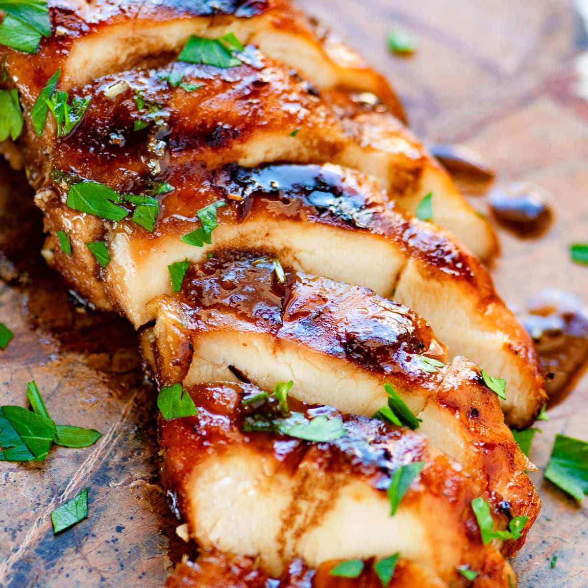

Marinated Grilled Chicken Breasts

How to make marinated grilled chicken breasts
Juicy chicken breasts cooked over a charcoal flame! Yum! Take your favorite sauce, brush the chicken breasts, and light up your grill.
When the coals get hot, throw on the chicken and cook, turning once and basting with more sauce in between.
Remove from gill, garnish with cilantro, and enjoy!
Ingredients
- Chicken breasts
- Charcoal
- Honey mustard, BBQ sauce, or other marinade of your choice
- Plastic bags
- Fresh cilantro
Steps
- Baste chicken breasts in marinade, place in plastic bags, and put in refrigerator overnight
- Place charcoal on grill and light the coals
- Remove chicken breasts from refrigerator
- Wash and chop cilantro
- Place chicken breats on the grill when gril temperature reaches 350-400 degrees
- Close grill lid and cook for 5 minutes
- Open lid and use basting brush to coat both sides of the chicken breasts
- Turn chicken to other side and cook 5 more minutes
- Check internal temperature using meat thermometer and remove from heat if temperature is near 165 degrees
- If not at desired tempature, turn chicken again and cook 2 minutes more each side, basting between turns again.
- Remove from heat, slice chicken crosswise, and garnish with cilantro